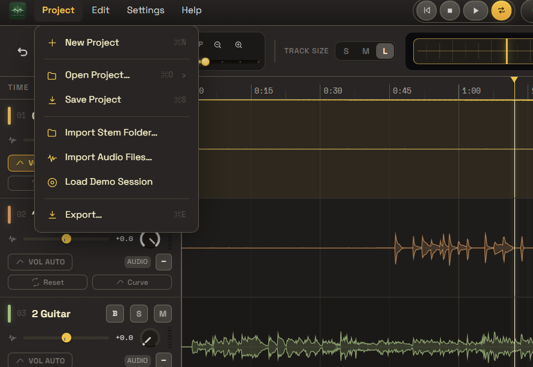
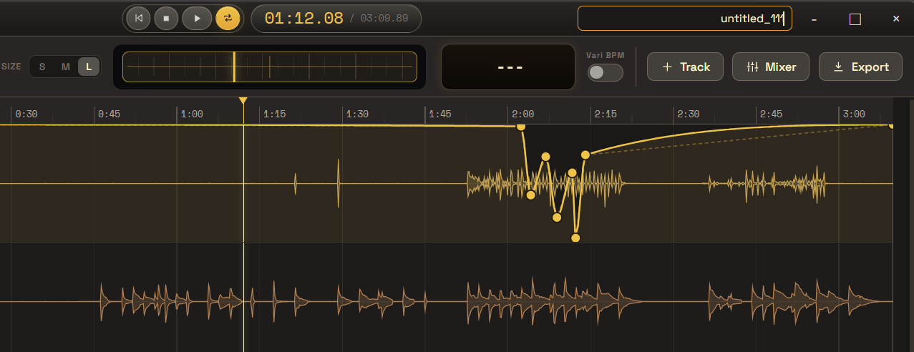
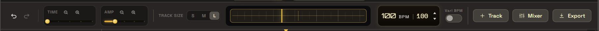
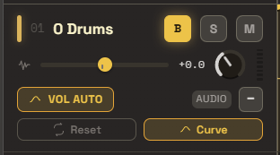
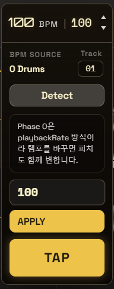
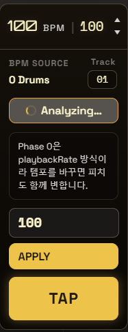
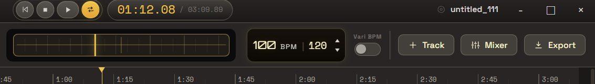
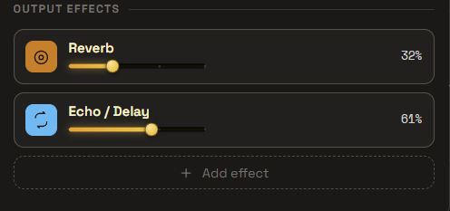
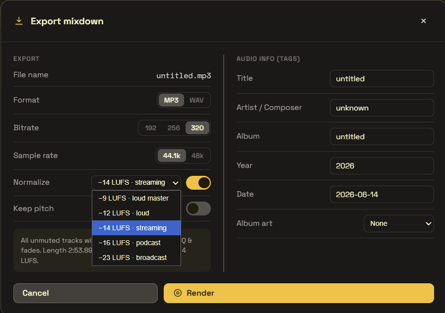

FocusDAW Studio 사용자 메뉴얼FocusDAW Studio User Manual
스템 오디오를 불러와 트랙별 믹싱, 볼륨 오토메이션, 마스터 EQ, 페이드, MP3/WAV 출력까지 처리하는 데스크톱 DAW 앱입니다.
A desktop DAW for importing stems and handling per-track mixing, volume automation, master EQ, fades, and MP3/WAV export.
1. 앱 개요
FocusDAW Studio는 여러 개의 스템 파일을 한 세션에 등록한 뒤, 각 트랙의 볼륨, 팬, 솔로, 뮤트, 리버브, 에코를 조정하고 최종 마스터를 출력하는 앱입니다. 전체 믹스에는 9밴드 그래픽 EQ, 마스터 볼륨, 출력 리버브/에코, 페이드 인/아웃을 적용할 수 있습니다.

주요 작업
- 프로젝트 새로 만들기, 열기, 저장
- 오디오 파일 또는 스템 폴더 가져오기
- 트랙별 볼륨, 팬, 솔로, 뮤트 조정
- 트랙별 리버브, 에코, 볼륨 오토메이션 적용
- 마스터 EQ, 페이드, 출력 효과 적용
- MP3 또는 WAV로 믹스다운 저장
지원 파일
- 입력 오디오:
.mp3,.wav,.aif,.aiff,.m4a,.ogg,.flac - 프로젝트:
.focus - 출력 오디오:
.mp3,.wav - MP3 출력 시 제목, 아티스트/작곡가, 앨범, 연도, 날짜, 앨범 아트 태그를 입력할 수 있습니다.
1. App Overview
FocusDAW Studio is an application designed to import multiple stem files into a single session, adjust volume, pan, solo, mute, reverb, and echo for each track, and export a final master mixdown. The overall mix can be shaped using a 9-band graphic EQ, master volume fader, master output reverb/echo effects, and master fade-in/out automation.
Key Features
- Create, open, and save projects (.focus)
- Import individual audio files or stem folders
- Control track volume, panning, solo, and mute
- Apply track reverb/echo sends and volume automation
- Master EQ shaping, master fades, and output effects
- Export final mixdown as MP3 or WAV
Supported Files
- Input Audio:
.mp3,.wav,.aif,.aiff,.m4a,.ogg,.flac - Project:
.focus - Output Audio:
.mp3,.wav - For MP3 exports, metadata tags (Title, Artist, Album, Year, Date, and Cover Art) can be embedded.
2. 시작과 프로젝트
앱 실행
개발 환경에서 실행할 때는 프로젝트 루트에서 다음 명령을 사용합니다.
npm start
패키징된 앱에서는 FocusDAW Studio 실행 파일을 열면 됩니다.

상단 Project 메뉴

| New Project | 현재 세션을 비우고 새 프로젝트를 시작합니다. |
|---|---|
| Open Project... | 저장된 .focus 프로젝트 파일을 엽니다. |
| Save Project | 현재 프로젝트 상태를 .focus 파일로 저장합니다. 트랙 설정, 마스터 설정, 오토메이션, 클립 정보가 저장됩니다. |
| Import Stem Folder... | 선택한 폴더의 루트에 있는 오디오 파일을 한 번에 등록합니다. |
| Import Audio Files... | 개별 오디오 파일을 여러 개 선택해 트랙으로 추가합니다. |
| Load Demo Session | Drums, Bass, Keys, Lead 데모 트랙을 불러와 앱 기능을 시험합니다. |
| Export... | 믹스다운 내보내기 창을 엽니다. 실제 창에서는 MP3와 WAV를 선택할 수 있습니다. |
프로젝트 이름 설정
상단 오른쪽의 프로젝트 이름 칸을 클릭하면 이름을 바로 입력·수정할 수 있습니다. 여기서 정한 이름은 제목 표시줄에 나타나고, 프로젝트를 저장할 때 파일 이름의 기본값으로도 사용됩니다.

untitled)을 클릭해 원하는 이름으로 바꿉니다.2. Start & Projects
Launching the App
In the development environment, execute the following command at the project root:
npm start
In the packaged release, simply open the FocusDAW Studio executable.
Top "Project" Menu
| New Project | Clears the current session and creates a fresh project. |
|---|---|
| Open Project... | Opens an existing .focus project file. |
| Save Project | Saves the current session state to a .focus file, including track parameters, master effects, automation curves, and clip locations. |
| Import Stem Folder... | Imports and creates tracks for all audio files located in the root of the chosen folder. |
| Import Audio Files... | Opens a file selector to add multiple individual audio files as tracks. |
| Load Demo Session | Loads a pre-configured multi-track demo session (Drums, Bass, Keys, Lead) to test the app features. |
| Export... | Opens the mixdown export dialog (supports MP3 and WAV export formats). |
Setting the Project Name
Click the project name field on the top right to rename it instantly. The name appears in the title bar and is also used as the default filename when saving the project.
untitled) to rename it.3. 오디오 가져오기
오디오를 가져오는 방법은 세 가지입니다.
- Track 버튼을 눌러 파일 선택 창에서 오디오 파일을 고릅니다.
- Project > Import Audio Files...로 여러 파일을 선택합니다.
- Project > Import Stem Folder...로 스템 폴더를 선택합니다.

여러 스템을 가져오면 보컬, 드럼, 베이스, 기타, 스트링, 신스처럼 파일별로 독립 트랙이 생성됩니다. 각 트랙은 같은 시작점에 놓이지만, 실제 오디오가 없는 구간은 빈 파형으로 보이므로 편곡의 구간별 밀도를 한눈에 확인할 수 있습니다.
드래그 앤 드롭
메인 타임라인 영역으로 오디오 파일을 끌어다 놓아도 트랙을 추가할 수 있습니다. 지원하지 않는 확장자는 자동으로 무시됩니다.
프로젝트를 다시 열 때
.focus 프로젝트는 오디오 설정과 파일 경로를 저장합니다. 원본 오디오 파일이 이동되면 트랙에 NO AUDIO가 표시될 수 있습니다. 이 경우 같은 이름의 오디오 파일을 다시 가져오면 누락된 트랙이 재연결됩니다.
3. Importing Audio
There are three ways to import audio files into your session:
- Click the + Track button to choose files via the file selector.
- Select Project > Import Audio Files... from the menu bar to import multiple files.
- Select Project > Import Stem Folder... to batch import all stems inside a folder.
Importing multiple stems creates separate, independent tracks for Vocals, Drums, Bass, Guitar, and so on. Tracks are aligned to the same starting point. Sections where a track is silent are shown as flat line waveforms, providing a clear layout of the arrangement density.
Drag and Drop
You can drag and drop audio files directly from your system file explorer onto the main timeline area to add new tracks. Unsupported formats are ignored automatically.
Reconnecting Missing Audio
The .focus file references audio file paths. If the original audio files are moved, the track will display a NO AUDIO warning. Re-importing files with matching names will automatically reconnect them.
4. 타임라인과 트랙
전송 컨트롤
상단 중앙의 컨트롤로 처음으로 이동, 정지, 재생/일시정지, 루프를 조작합니다. 현재 재생 위치는 분:초 형식으로 표시됩니다.
줌과 트랙 크기
- TIME: 타임라인의 가로 확대/축소를 조절합니다.
- AMP: 파형 표시 높이를 조절합니다. 실제 오디오 볼륨이 아니라 파형 보기 배율입니다.
- TRACK SIZE: 트랙 행 높이를 S, M, L 중에서 선택합니다.
- 상단 미니맵을 클릭하거나 드래그하면 긴 프로젝트에서 원하는 구간으로 빠르게 이동합니다.


상단 미니맵 이동
타임라인 위쪽의 긴 막대는 전체 곡에서 현재 보고 있는 위치를 보여주는 미니맵입니다. 미니맵 안의 선택 영역을 드래그하면 긴 프로젝트에서도 원하는 시간대로 빠르게 이동할 수 있습니다.

BPM 측정과 전체 템포 조정
FocusDAW Studio는 트랙 오디오에서 곡의 BPM(분당 박자 수)을 자동으로 측정하고, 그 값을 기준으로 전체 음악의 재생 템포를 조정할 수 있습니다. 새 프로젝트의 BPM은 처음에 ---로 표시되며, 모든 트랙을 지우거나 새 프로젝트를 시작하면 다시 ---로 초기화됩니다.

BPM 표시기 오른쪽에는 Vari BPM 스위치가 있습니다. 이 스위치를 켜야 재생 BPM으로 곡 속도를 조정하며, 끄면 재생 BPM을 바꿔도 속도가 변하지 않습니다(기본값 OFF). 스위치를 켠 상태에서 BPM 표시기 위에 마우스 휠을 돌리거나 ▲▼ 버튼을 누르면 뒤쪽 재생 BPM이 1씩 바뀌고, 곡 전체가 그 비율(재생 BPM ÷ 프로젝트 BPM)만큼 빨라지거나 느려집니다.
① BPM 측정 대상 트랙 선택 (B 버튼)
먼저 어떤 트랙의 오디오로 BPM을 측정할지 정합니다. 트랙 헤더의 B 버튼을 누르면 그 트랙이 BPM 측정 소스로 선택되어 배경이 채워지며, B는 한 번에 한 트랙에만 켜집니다.

② BPM 설정 패널 열기
BPM 표시기를 클릭하면 아래로 설정 패널이 펼쳐집니다. 다시 누르거나, 마우스가 패널 밖으로 나간 채 5초가 지나면 접힙니다.

| Detect | B로 선택한 트랙의 오디오를 분석해 BPM을 자동 추정합니다. 추정값이 아래 입력칸에 채워집니다. |
|---|---|
| 직접 입력 | 입력칸에 BPM 숫자를 직접 적을 수 있습니다. |
| TAP | 음악을 들으며 박자에 맞춰 버튼을 반복해 누르면 BPM을 수동 측정합니다. 누를수록 값이 정확해지고, 버튼에는 실시간 BPM과 탭 횟수(TAP · n)가 표시됩니다. |
| APPLY | 측정/입력한 값을 프로젝트 BPM과 재생 BPM에 모두 적용합니다. |
③ Detect 분석 중 표시
Detect를 누르면 분석이 진행되는 동안 버튼이 회전 아이콘과 Analyzing… 표시로 바뀝니다. 분석이 끝나면 추정된 BPM이 입력칸에 강조 효과와 함께 표시됩니다.

④ 전체 음악 템포 바꿔 재생하기
Vari BPM 스위치를 켠 뒤 재생 BPM(뒤 숫자)을 바꾸면 모든 트랙이 같은 비율로 빨라지거나 느려진 상태로 재생됩니다. 예를 들어 프로젝트 BPM이 100일 때 재생 BPM을 120으로 올리면 곡 전체가 1.2배 빠르게 재생됩니다.

트랙 헤더 컨트롤
| 볼륨 슬라이더 | 트랙의 재생 레벨을 조절합니다. 0dB 지점은 슬라이더 중앙 눈금으로 표시됩니다. |
|---|---|
| Pan 노브 | 좌우 스테레오 위치를 조정합니다. |
| B 버튼 | BPM 측정 대상으로 사용할 트랙을 선택합니다. 한 번에 하나의 트랙만 선택됩니다. |
| S 버튼 | 해당 트랙만 듣는 Solo 기능입니다. Solo가 켜진 트랙이 있으면 다른 트랙은 자동으로 들리지 않습니다. |
| M 버튼 | 해당 트랙을 음소거합니다. |
| 레벨 미터 | 트랙의 현재 출력 레벨을 표시합니다. |
| 삭제 버튼 | 트랙을 제거합니다. 확인 창에서 삭제를 확정해야 합니다. |
4. Timeline & Tracks
Transport Controls
Located at the top center, these control Go to Start, Stop, Play/Pause, and Loop. The current play position is shown in min:sec format.
Zoom and Track Size
- TIME: Adjusts horizontal zoom (time scale) of the timeline.
- AMP: Adjusts the display height of waveforms. This is a visual zoom scale only and does not change the actual audio level.
- TRACK SIZE: Changes the height of track headers and lanes (S, M, L options).
- Drag or click the top minimap to jump quickly to any section of the song.
Minimap Navigation
The bar above the timeline represents the entire length of the project. Dragging the highlighted area moves the timeline view viewport instantly across long sessions.
BPM Detection and Whole-Song Tempo
FocusDAW Studio detects a song's BPM (beats per minute) from a track's audio and lets you adjust the playback tempo of the whole song based on it. A new project starts with BPM shown as ---, and it returns to --- whenever you clear all tracks or start a new project.
The Vari BPM switch to the right of the indicator must be on for the playback BPM to change the song speed (off = no speed change; default off). With it on, hover the BPM indicator and scroll the mouse wheel, or use the ▲▼ buttons, to change the playback BPM by 1 — the whole song speeds up or slows down by that ratio (playback BPM ÷ project BPM).
1. Choose the detection source track (B button)
Press the B button on a track header to mark it as the BPM detection source (its background fills in). Only one track can be the B source at a time. Picking a track with a clear beat (e.g. drums) gives more accurate detection.
2. Open the BPM settings panel
Click the BPM indicator to expand the settings panel. Click it again, or leave it inactive outside the mouse area for 5 seconds, to collapse it.
| Detect | Analyzes the B-selected track's audio and estimates its BPM, filling the input field. |
|---|---|
| Manual input | Type a BPM value directly into the field. |
| TAP | Tap along with the beat repeatedly to measure BPM. Accuracy improves the more you tap, and the button shows a live BPM and tap count (TAP · n). |
| APPLY | Applies the measured/entered value to both the project BPM and the playback BPM. |
3. Detection-in-progress feedback
While Detect runs, the button changes to a spinner with Analyzing…. When it finishes, the estimated BPM appears in the input field with a brief highlight.
4. Play back at a changed tempo
With the Vari BPM switch on, changing the playback BPM (the back number) plays every track faster or slower by the same ratio. For example, with a project BPM of 100, raising the playback BPM to 120 plays the whole song 1.2× faster.
Track Header Controls
| Volume Slider | Controls track volume. The center position marks nominal gain (0dB). |
|---|---|
| Pan Knob | Positions the track in the stereo field (Left/Right balance). |
| B Button | Selects the track used for BPM detection. Only one track can be selected at a time. |
| S Button | Solos the track (mutes all other non-soloed tracks). |
| M Button | Mutes the track. |
| Level Meter | Displays real-time playback output levels. |
| Delete Button | Deletes the track from the project (requires confirmation). |
5. 볼륨 오토메이션
트랙 헤더의 VOL AUTO를 켜면 트랙 위에 볼륨 오토메이션 곡선이 표시됩니다. 곡선의 점은 시간에 따른 볼륨 변화를 의미합니다.
- 오토메이션 선을 클릭하면 새 포인트가 추가됩니다.
- 포인트를 드래그하면 시간과 볼륨 값을 바꿀 수 있습니다.
- 중간 포인트를 우클릭하면 삭제됩니다. 시작점과 끝점은 유지됩니다.
- 트랙 크기를 L로 키우면 Reset과 Curve 버튼을 함께 볼 수 있습니다.
- Curve를 켜면 직선 연결 대신 부드러운 곡선으로 볼륨 변화를 적용합니다.
오토메이션 편집 방법
| 마우스 왼쪽 버튼 클릭 | 오토메이션 선 위를 클릭하면 새 편집점이 추가됩니다. |
|---|---|
| 편집점 드래그 | 편집점 위에 마우스를 올리면 손 모양 커서로 바뀝니다. 그 상태에서 마우스 왼쪽 버튼을 누른 채 움직이면 편집점의 시간 위치와 볼륨 값을 이동할 수 있습니다. |
| 마우스 오른쪽 버튼 클릭 | 편집점 위에 마우스를 올려 손 모양 커서가 보이는 상태에서 오른쪽 마우스 버튼을 누르면 해당 편집점이 삭제됩니다. 시작점과 끝점은 삭제되지 않습니다. |

포인트 조정
오토메이션 선 위를 클릭해 포인트를 추가하고, 포인트를 드래그해 볼륨 변화 시점과 크기를 조절합니다. 아래로 내린 구간은 소리가 작아지고, 위로 올린 구간은 원래 볼륨에 가깝게 재생됩니다.

Curve 적용
Curve를 켜면 포인트 사이가 직선이 아니라 부드러운 곡선으로 이어집니다. 급격한 볼륨 변화보다 자연스러운 페이드나 강조를 만들 때 유용합니다.

5. Volume Automation
Toggling VOL AUTO in the track header displays a yellow automation lane over the track lane. Points on this line represent volume changes over time.
- Left-click the line to add a new automation point.
- Click and drag points horizontally (time) and vertically (volume).
- Right-click a point to delete it. The start and end anchors cannot be deleted.
- When track size is set to L, Reset and Curve buttons appear.
- Toggling Curve connects points with smooth bezier curves instead of linear lines.
How to Edit Automation Points
| Left-click line | Creates a new automation point at the cursor position. |
|---|---|
| Drag point | Hover over a point to see a hand cursor, then drag to change time and volume values. |
| Right-click point | Right-click a point while the hand cursor is visible to delete it (anchors excluded). |
Adjusting Levels
Add points and adjust them to shape volume over time. Pulling the line down attenuates volume, while dragging it up approaches original volume.
Applying Smooth Curves
Enabling Curve shapes the paths between points with smooth bezier curves. This is useful for creating organic fade-ins, fade-outs, or natural volume rises.
6. 믹서와 마스터
상단 오른쪽의 Mixer 버튼을 누르면 떠 있는 믹서 창이 열립니다. 믹서 창은 제목 표시줄을 드래그해 위치를 옮길 수 있습니다.

채널 스트립
- VRB: 트랙 리버브 전송량을 조절합니다.
- ECHO: 트랙 에코/딜레이 전송량을 조절합니다.
- S/M: Solo와 Mute를 전환합니다.
- PAN: 좌우 위치를 조정합니다.
- Fader: 트랙 볼륨을 세로 페이더로 조절합니다.


MASTER 패널
MASTER 패널은 최종 출력에 적용되는 설정입니다. 9밴드 Graphic EQ, FFT 또는 Level meter 보기, 마스터 볼륨, 마스터 리버브/에코, EQ 프리셋을 제공합니다.

| Graphic EQ · FFT | 스펙트럼 배경 위에 EQ 곡선을 표시합니다. 각 밴드 포인트를 드래그해 -12dB부터 +12dB까지 조절합니다. |
|---|---|
| Level meter | 주파수 대역별 레벨 미터를 표시합니다. EQ 포인트 오버레이도 함께 조작할 수 있습니다. |
| EQ PRESET | Flat, Pop, Classic, HipHop 프리셋을 바로 적용합니다. |
| Output Effects | 최종 출력에 Reverb와 Echo / Delay를 추가합니다. 각 슬라이더로 0~100% 전송량을 조절하며, 켜진 효과는 아이콘에 색이 들어오고 오른쪽에 퍼센트가 표시됩니다. |

OUTPUT FX 트랙
타임라인 맨 아래의 OUTPUT FX 트랙은 Master 트랙 역할을 하며, 전체 믹스에 적용되는 페이드와 EQ/효과 상태를 보여줍니다. 이 트랙에서 Fade in/out 길이를 직접 조정할 수 있습니다.

| 왼쪽 점 드래그 | OUTPUT FX 트랙 왼쪽의 초록 점을 좌우로 드래그하면 곡 시작 부분에 Fade in 효과를 줄 수 있습니다. 점을 오른쪽으로 옮길수록 서서히 커지는 시간이 길어집니다. |
|---|---|
| 오른쪽 끝 점 드래그 | OUTPUT FX 트랙 오른쪽 끝의 빨간 점을 좌우로 드래그하면 곡 끝부분에 Fade out 효과를 줄 수 있습니다. 점을 왼쪽으로 옮길수록 서서히 작아지는 시간이 길어집니다. |
| 적용 범위 | Fade in/out은 개별 트랙이 아니라 최종 Master 출력에 적용되며, 재생과 믹스다운 내보내기에 모두 반영됩니다. |
6. Mixer & Master
Click the Mixer button on the top right to open the floating mixer console. Drag its title bar to position it anywhere on the screen.
Channel Strips
- VRB: Controls track Reverb effect send level.
- ECHO: Controls track Echo/Delay effect send level.
- S/M: Toggles Solo and Mute states.
- PAN: Positions the track left or right in the stereo field.
- Fader: A vertical slider for high-precision volume adjustments.
MASTER Panel
The MASTER panel shapes the final stereo mixdown. It provides a 9-band Graphic EQ with FFT frequency spectrum or level meters, master volume, output effects (Reverb, Echo), and EQ presets.
| Graphic EQ / FFT | Displays the EQ curve over a real-time FFT spectrum background. Drag points to adjust gain from -12dB to +12dB. |
|---|---|
| Level meters | Displays real-time level bars for each frequency range alongside EQ controls. |
| EQ PRESETS | Instantly applies preset curves: Flat, Pop, Classic, and HipHop. |
| Output Effects | Applies global Reverb and Echo/Delay to the master stereo bus. Each slider sets the 0–100% send amount; active effects light up and show their percentage on the right. |
Master OUTPUT FX Track
Located at the bottom of the timeline, the OUTPUT FX track represents the Master channel. Drag the handles on this track to shape master Fade-in and Fade-out curves directly.
| Green Handle (Left) | Drag horizontally to define a Fade-In duration at the start of the mix. |
|---|---|
| Red Handle (Right) | Drag horizontally to define a Fade-Out duration at the end of the mix. |
| Scope | Master fades apply directly to the final mix, affecting both real-time playback and rendered files. |
7. 믹스다운 내보내기
Export 버튼 또는 Project > Export... 메뉴를 누르면 Export mixdown 창이 열립니다. 실제 내보내기 창에서는 MP3와 WAV 중 하나를 고를 수 있습니다.
Export 설정

| Format | MP3 또는 WAV를 선택합니다. |
|---|---|
| Bitrate | MP3 출력 시 192, 256, 320kbps 중에서 선택합니다. |
| Sample rate | 44.1kHz 또는 48kHz로 렌더링합니다. |
| Normalize | 스위치를 켜면 목표 음량(LUFS)에 맞춰 라우드니스 정규화를 적용합니다. -9(loud master), -12(loud), -14(streaming), -16(podcast), -23(broadcast) LUFS 중에서 목표를 고를 수 있습니다. |
| Keep pitch | Vari BPM으로 출력 템포를 바꿀 때 Export 파일에 피치 보존 Time Stretch를 적용합니다. Electron 데스크톱에서는 현재 ffmpeg atempo 기준선을 사용하며, 실시간 재생은 캐시형 Time Stretch 프리뷰를 사용합니다. |

Audio info 태그
제목, 아티스트/작곡가, 앨범, 연도, 날짜를 입력할 수 있습니다. MP3 형식에서는 앨범 아트도 함께 넣을 수 있습니다. 프리셋 커버를 선택하거나 이미지 파일을 직접 고를 수 있습니다.
저장 절차
- 내보내기 설정과 태그 정보를 입력합니다.
- Render를 누릅니다.
- 렌더링이 끝나면 Save file을 눌러 저장 위치를 선택합니다.
7. Exporting Mixdown
Click the Export button or go to Project > Export... to open the Export dialog. The dialog supports exporting in either MP3 or WAV format.
Export Settings
| Format | Choose MP3 or WAV format. |
|---|---|
| Bitrate | Choose 192, 256, or 320kbps for MP3 compression quality. |
| Sample rate | Select 44.1kHz or 48kHz for output rendering. |
| Normalize | When enabled, applies loudness normalization to a target LUFS. Choose from -9 (loud master), -12 (loud), -14 (streaming), -16 (podcast), or -23 (broadcast) LUFS. |
| Keep pitch | Applies pitch-preserving Time Stretch to exported files when Vari BPM changes the output tempo. Electron desktop currently uses the ffmpeg atempo baseline; realtime playback uses a cached Time Stretch preview. |
Audio Info Tags
Enter Title, Artist/Composer, Album, Year, and Date tags. When exporting to MP3, you can embed Cover Art by choosing a preset cover or choosing a custom image file.
Exporting Steps
- Configure your format, quality, and metadata tags.
- Click Render to print the session audio.
- Once rendering completes, click Save file to select the output destination on your computer.
8. 설정과 테마
상단 메뉴의 Settings를 누르면 색상 테마를 변경하거나 분리된 믹서 창의 환경 설정을 관리할 수 있습니다.
- Color Theme (색상 테마): 10가지 색상 테마(Warm Analog, Classical Ivory, Modern Blue, Forest Green, Arctic Frost, Neon Lime, Minimal Slate, Sage Mist, Solar Gold, Slate Navy) 중 하나를 선택하면 앱 전체와 믹서 콘솔의 외관 색상이 즉시 연동되어 바뀝니다.
- Mixer Console Window (믹서 위치 및 크기 초기화): 믹서의 위치를 드래그하여 화면 구석으로 치워두었거나 크기를 크게 늘렸던 정보를 초기 상태로 되돌리고 싶다면 Reset Position 버튼을 누르십시오. 믹서 창의 좌표와 크기 기억 값이 디폴트 상태로 깨끗이 지워져 다음 오픈 시 다시 화면 중앙에 나타나게 됩니다.

8. Settings & Themes
Click Settings in the menu bar to change color themes or manage settings for the detached Mixer window.
- Color Theme: Choose from 10 color themes (Warm Analog, Classical Ivory, Modern Blue, Forest Green, Arctic Frost, Neon Lime, Minimal Slate, Sage Mist, Solar Gold, Slate Navy). The visual styles of the main window and Mixer console update instantly.
- Mixer Console Window: If you need to restore the Mixer window size and screen coordinates to their default settings, click the Reset Position button. The cached window bounds will be cleared, causing the Mixer window to reappear in the center of the screen on the next open.
9. 단축키
| Space | 재생 / 일시정지 |
|---|---|
| F3 | 믹서 콘솔(Mixer) 열기 / 닫기 |
| 0 | Play bar를 0초로 이동 |
| , 또는 < | Play bar를 1초 뒤로 이동 |
| . 또는 > | Play bar를 1초 앞으로 이동 |
| ← | Play bar를 1초 뒤로 이동 |
| → | Play bar를 1초 앞으로 이동 |
| Ctrl + S | 프로젝트 저장 |
| Ctrl + O | 프로젝트 열기 |
| Ctrl + Z | 실행 취소 |
| Ctrl + Y | 다시 실행 |
| Ctrl + Shift + Z | 다시 실행 |
9. Shortcuts
| Space | Play / Pause |
|---|---|
| F3 | Open / Close Mixer Console |
| 0 | Move the play bar to 0 seconds |
| , or < | Move the play bar backward by 1 second |
| . or > | Move the play bar forward by 1 second |
| ← | Move the play bar backward by 1 second |
| → | Move the play bar forward by 1 second |
| Ctrl + S | Save Project |
| Ctrl + O | Open Project |
| Ctrl + Z | Undo |
| Ctrl + Y | Redo |
| Ctrl + Shift + Z | Redo |
10. 문제 해결
오디오가 들리지 않을 때
- 트랙의 M 버튼이 켜져 있지 않은지 확인합니다.
- 다른 트랙의 S 버튼이 켜져 있으면 Solo가 켜진 트랙만 들립니다.
- 트랙 볼륨과 마스터 볼륨이 너무 낮지 않은지 확인합니다.
- 운영체제의 출력 장치와 볼륨을 확인합니다.
프로젝트를 열었는데 NO AUDIO가 보일 때
원본 오디오 파일의 위치가 바뀌었을 가능성이 큽니다. 같은 파일을 다시 가져오면 앱이 누락된 트랙을 파일 이름 또는 경로 기준으로 재연결합니다.
MP3 저장이 실패할 때
데스크톱 앱은 내부적으로 ffmpeg를 사용해 MP3를 인코딩합니다. 개발 환경에서 문제가 있으면 의존성이 설치되어 있는지 확인한 뒤 npm install을 다시 실행하세요. 브라우저에서 직접 실행하는 경우에는 lamejs가 로드되어야 MP3 인코딩이 가능합니다.
화면이 너무 좁을 때
FocusDAW Studio의 최소 창 크기는 960x600입니다. 믹서나 Export 창이 좁게 보이면 창을 넓히거나 타임라인을 스크롤해 필요한 영역을 확인하세요.
10. Troubleshooting
No Sound During Playback
- Check if the track M (Mute) button is turned on.
- Check if another track has its S (Solo) button active (which mutes all other tracks).
- Check track faders and master volume fader levels.
- Verify system audio output device settings and volume levels.
NO AUDIO displays after loading a project
This occurs when source audio files have been moved or deleted. Re-importing matching audio files will let the app auto-reconnect them.
MP3 Render Fails
The desktop app uses ffmpeg internally to encode MP3s. In a development environment, run npm install to restore dependencies. In a standalone browser, lamejs must be loaded to support MP3 exports.
Elements cut off or window too small
The minimum window resolution is 960x600. Resize your window or scroll horizontally on the timeline to locate hidden elements.